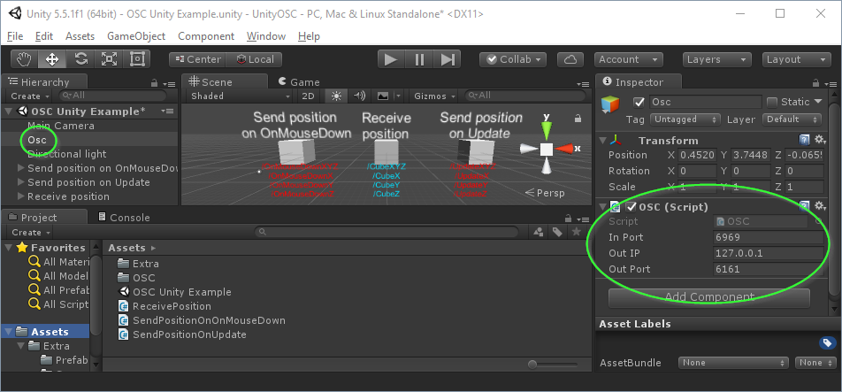
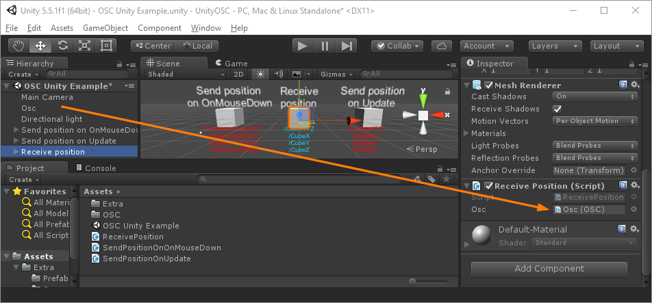

UnityOSC
Open Sound Control (OSC) for Unity 3D.
Get It!
Importing UnityOSC
Import the OSC.cs script into your project by dragging it into your assets (the script can be found in the "Assets" folder of the Unity project).
Create an empty GameObject and drag the imported OSC.cs onto it.Configure the OSC port and IP settings to match your needs.

Receiving messages
To receive messages:
- Create a new script.
- Create a reference to the OSC script on the empty gameObject you created: public OSC osc;.
- In Start() set the name of a function to be called when a specific OSC message is received: osc.SetAddressHandler( "/CubeXYZ" , OnReceiveXYZ );
- Create the function that will receive the OSC message.
- Get the message data with GetFloat(index);.
- /CubeXYZ followed by three floats
- /CubeX followed by one float
- /CubeY followed by one float
- /CubeZ followed by one float
using UnityEngine; using System.Collections; public class ReceivePosition : MonoBehaviour { public OSC osc; // Use this for initialization void Start () { osc.SetAddressHandler( "/CubeXYZ" , OnReceiveXYZ ); osc.SetAddressHandler("/CubeX", OnReceiveX); osc.SetAddressHandler("/CubeY", OnReceiveY); osc.SetAddressHandler("/CubeZ", OnReceiveZ); } // Update is called once per frame void Update () { } void OnReceiveXYZ(OscMessage message){ float x = message.GetFloat(0); float y = message.GetFloat(1); float z = message.GetFloat(2); transform.position = new Vector3(x,y,z); } void OnReceiveX(OscMessage message) { float x = message.GetFloat(0); Vector3 position = transform.position; position.x = x; transform.position = position; } void OnReceiveY(OscMessage message) { float y = message.GetFloat(0); Vector3 position = transform.position; position.y = y; transform.position = position; } void OnReceiveZ(OscMessage message) { float z = message.GetFloat(0); Vector3 position = transform.position; position.z = z; transform.position = position; } }
Do not forget to set the reference to the OSC.cs script :
The handler function
| SetAddressHandler( address , name of function ) | void | Sets a handler function to be called when a message with the specified address is received |
| SetAllMessageHandler( name of function ) | void | Sets a handler function to be called when any message is received (there can only be one SetAllMessageHandler handler function ) |
The handler function must be as follows :
void NameOfFunction ( OscMessage message ) {
}
An OSC message : OscMessage
| address | string | Returns or sets the address of the message |
| GetFloat( index ) | float | Returns the value at that index |
| values.Add( number ) | number | Adds the number to the message |
Sending an OSC message
To send messages:
- Create a new message : OscMessage message = new OscMessage();
- Set the address : message.address = "/address";.
- Add some data : message.values.Add( 743 );
- Send the message : osc.Send(message);.